import pandas as pd
import numpy as np
from matplotlib import pyplot as plt
import seaborn as sns
sns.set_style("darkgrid")
data = pd.read_csv('../datasets/WDIData.csv')
print('Column names:', data.columns)
Column names: Index(['Country Name', 'Country Code', 'Indicator Name', 'Indicator Code',
'1960', '1961', '1962', '1963', '1964', '1965', '1966', '1967', '1968',
'1969', '1970', '1971', '1972', '1973', '1974', '1975', '1976', '1977',
'1978', '1979', '1980', '1981', '1982', '1983', '1984', '1985', '1986',
'1987', '1988', '1989', '1990', '1991', '1992', '1993', '1994', '1995',
'1996', '1997', '1998', '1999', '2000', '2001', '2002', '2003', '2004',
'2005', '2006', '2007', '2008', '2009', '2010', '2011', '2012', '2013',
'2014', '2015', '2016', 'Unnamed: 61'],
dtype='object')
print('No. of rows, columns:', data.shape)
No. of rows, columns: (401016, 62)
nb_countries = data['Country Code'].unique().shape[0]
print('Unique number of countries:', nb_countries)
Unique number of countries: 264
data.dtypes
Country Name object
Country Code object
Indicator Name object
Indicator Code object
1960 float64
...
2013 float64
2014 float64
2015 float64
2016 float64
Unnamed: 61 float64
Length: 62, dtype: object
central_govt_debt = data.loc[data['Indicator Name']=='Central government debt, total (% of GDP)']
military_exp = data.loc[data['Indicator Name']=='Military expenditure (% of GDP)']
print('Shape of central_govt_debt:', central_govt_debt.shape)
print('Shape of military_exp:', military_exp.shape)
Shape of central_govt_debt: (264, 62)
Shape of military_exp: (264, 62)
central_govt_debt['2010'].describe()
count 94.000000
mean 53.048479
std 29.790674
min 0.519665
25% 28.357797
50% 49.540245
75% 75.259012
max 161.596402
Name: 2010, dtype: float64
military_exp['2010'].describe()
count 192.000000
mean 1.988556
std 1.354856
min 0.000000
25% 1.190287
50% 1.613407
75% 2.624711
max 8.565679
Name: 2010, dtype: float64
central_govt_debt.index = central_govt_debt['Country Code']
military_exp.index = military_exp['Country Code']
central_govt_debt_2010 = central_govt_debt['2010'].loc[~pd.isnull(central_govt_debt['2010'])]
military_exp_2010 = military_exp['2010'].loc[~pd.isnull(military_exp['2010'])]
central_govt_debt_2010
Country Code
CEB 47.446156
EMU 72.414709
ECS 63.137736
ECA 22.338687
TEC 27.287492
...
UGA 27.552595
UKR 29.969556
GBR 83.406797
USA 85.601594
URY 44.222702
Name: 2010, Length: 94, dtype: float64
military_exp_2010
Country Code
ARB 5.117807
CEB 1.482543
EAR 2.335511
EAS 1.563325
EAP 1.724963
...
VEN 0.853924
VNM 2.305049
YEM 4.685557
ZMB 1.382593
ZWE 0.977841
Name: 2010, Length: 192, dtype: float64
data_to_plot = pd.concat((central_govt_debt_2010, military_exp_2010), axis=1)
data_to_plot.columns = ['central_govt_debt', 'military_exp']
data_to_plot.head()
| central_govt_debt | military_exp | |
|---|---|---|
| Country Code | ||
| CEB | 47.446156 | 1.482543 |
| EMU | 72.414709 | 1.618759 |
| ECS | 63.137736 | 1.860343 |
| ECA | 22.338687 | 2.933044 |
| TEC | 27.287492 | 2.785617 |
data_to_plot.shape
(202, 2)
data_to_plot = data_to_plot.loc[(~pd.isnull(data_to_plot.central_govt_debt)) & (~pd.isnull(data_to_plot.military_exp)), :]
data_to_plot.head()
| central_govt_debt | military_exp | |
|---|---|---|
| Country Code | ||
| CEB | 47.446156 | 1.482543 |
| EMU | 72.414709 | 1.618759 |
| ECS | 63.137736 | 1.860343 |
| ECA | 22.338687 | 2.933044 |
| TEC | 27.287492 | 2.785617 |
data_to_plot.shape
(84, 2)
military_exp_np = np.array(data_to_plot.military_exp)
plt.figure(figsize=(5.5, 5.5))
g = sns.distplot(military_exp_np, norm_hist=False)
g.set_title('Military expenditure (% of GDP) of 85 countries in 2010');
plt.xlabel("Military expenditure (% of GDP)");
/var/folders/_g/cvyjp6gs3f3dmxh_xzsntrkw0000gn/T/ipykernel_15203/3845933093.py:2: UserWarning:
`distplot` is a deprecated function and will be removed in seaborn v0.14.0.
Please adapt your code to use either `displot` (a figure-level function with
similar flexibility) or `histplot` (an axes-level function for histograms).
For a guide to updating your code to use the new functions, please see
https://gist.github.com/mwaskom/de44147ed2974457ad6372750bbe5751
g = sns.distplot(military_exp_np, norm_hist=False)
/Users/sergiosilveramurcia/Conda/miniconda3/envs/TimesSeries/lib/python3.9/site-packages/seaborn/_oldcore.py:1119: FutureWarning: use_inf_as_na option is deprecated and will be removed in a future version. Convert inf values to NaN before operating instead.
with pd.option_context('mode.use_inf_as_na', True):
from statsmodels.graphics.gofplots import qqplot
qqplot(military_exp_np, line='s');
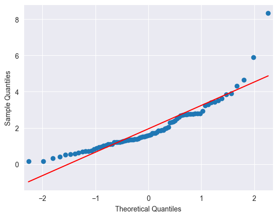
# prueba Shapiro Wilk noramalidad
from scipy.stats import shapiro
print('Shapiro-Wilk Test:')
stat, p = shapiro(military_exp_np)
print('Statistics=%.6f, p=%e' % (stat, p))
alpha = 0.05
if p > alpha:
print('Sample looks Normal (fail to reject H0)')
else:
print('Sample does not look Normal (reject H0)')
Shapiro-Wilk Test:
Statistics=0.857024, p=1.646606e-07
Sample does not look Normal (reject H0)
import numpy as np
from scipy import stats
print('Kolmogorov-Smirnov:')
stat, p = stats.kstest(military_exp_np, stats.norm.cdf)
print('Statistics=%.6f, p=%e' % (stat, p))
alpha = 0.05
if p > alpha:
print('Sample looks Normal (fail to reject H0)')
else:
print('Sample does not look Normal (reject H0)')
Kolmogorov-Smirnov:
Statistics=0.659326, p=2.320049e-36
Sample does not look Normal (reject H0)
from scipy.stats import normaltest, kurtosis, skew
stat, p = normaltest(military_exp_np)
print('Statistics=%.3f, p=%.3f' % (stat, p))
alpha = 0.05
if p > alpha:
print('Sample looks Gaussian (fail to reject H0)')
else:
print('Sample does not look Gaussian (reject H0)')
print('Kurtosis=%.3f'%kurtosis(military_exp_np))
print('Skew=%.3f'%skew(military_exp_np))
Statistics=49.874, p=0.000
Sample does not look Gaussian (reject H0)
Kurtosis=6.122
Skew=1.916
plt.figure(figsize=(5.5, 5.5))
g = sns.kdeplot(data_to_plot, x = "military_exp", y = "central_govt_debt", fill=True)
g.set_title('Military expenditures & Debt of central governments in 2010');
plt.xlabel("Military expenditure");
plt.ylabel("Debt of central governments");
/Users/sergiosilveramurcia/Conda/miniconda3/envs/TimesSeries/lib/python3.9/site-packages/seaborn/_oldcore.py:1119: FutureWarning: use_inf_as_na option is deprecated and will be removed in a future version. Convert inf values to NaN before operating instead.
with pd.option_context('mode.use_inf_as_na', True):
/Users/sergiosilveramurcia/Conda/miniconda3/envs/TimesSeries/lib/python3.9/site-packages/seaborn/_oldcore.py:1119: FutureWarning: use_inf_as_na option is deprecated and will be removed in a future version. Convert inf values to NaN before operating instead.
with pd.option_context('mode.use_inf_as_na', True):
Series Temporales#
central_govt_debt_us = central_govt_debt.loc[central_govt_debt['Country Code']=='USA', :].T
military_exp_us = military_exp.loc[military_exp['Country Code']=='USA', :].T
data_us = pd.concat((military_exp_us, central_govt_debt_us), axis=1)
index0 = np.where(data_us.index=='1960')[0][0]
index1 = np.where(data_us.index=='2010')[0][0]
data_us = data_us.iloc[index0:index1+1,:]
data_us.columns = ['Federal Military Expenditure', 'Debt of Federal Government']
data_us.head()
| Federal Military Expenditure | Debt of Federal Government | |
|---|---|---|
| 1960 | 8.35266 | NaN |
| 1961 | 8.487129 | NaN |
| 1962 | 8.656586 | NaN |
| 1963 | 8.189007 | NaN |
| 1964 | 7.467629 | NaN |
data_us.isna().sum()
Federal Military Expenditure 0
Debt of Federal Government 29
dtype: int64
(data_us.isnull().sum()/len(data_us))*100
Federal Military Expenditure 0.000000
Debt of Federal Government 56.862745
dtype: float64
data_us['backward_fill'] = data_us['Debt of Federal Government'].bfill()
data_us.head()
/var/folders/_g/cvyjp6gs3f3dmxh_xzsntrkw0000gn/T/ipykernel_15203/3803167022.py:1: FutureWarning: Downcasting object dtype arrays on .fillna, .ffill, .bfill is deprecated and will change in a future version. Call result.infer_objects(copy=False) instead. To opt-in to the future behavior, set `pd.set_option('future.no_silent_downcasting', True)`
data_us['backward_fill'] = data_us['Debt of Federal Government'].bfill()
| Federal Military Expenditure | Debt of Federal Government | backward_fill | |
|---|---|---|---|
| 1960 | 8.35266 | NaN | 39.016963 |
| 1961 | 8.487129 | NaN | 39.016963 |
| 1962 | 8.656586 | NaN | 39.016963 |
| 1963 | 8.189007 | NaN | 39.016963 |
| 1964 | 7.467629 | NaN | 39.016963 |
data_us['mean_fill'] = data_us['Debt of Federal Government'].mean()
data_us.head()
| Federal Military Expenditure | Debt of Federal Government | backward_fill | mean_fill | |
|---|---|---|---|---|
| 1960 | 8.35266 | NaN | 39.016963 | 51.155537 |
| 1961 | 8.487129 | NaN | 39.016963 | 51.155537 |
| 1962 | 8.656586 | NaN | 39.016963 | 51.155537 |
| 1963 | 8.189007 | NaN | 39.016963 | 51.155537 |
| 1964 | 7.467629 | NaN | 39.016963 | 51.155537 |
data_us['median_fill'] = data_us['Debt of Federal Government'].median()
data_us.head()
| Federal Military Expenditure | Debt of Federal Government | backward_fill | mean_fill | median_fill | |
|---|---|---|---|---|---|
| 1960 | 8.35266 | NaN | 39.016963 | 51.155537 | 47.659404 |
| 1961 | 8.487129 | NaN | 39.016963 | 51.155537 | 47.659404 |
| 1962 | 8.656586 | NaN | 39.016963 | 51.155537 | 47.659404 |
| 1963 | 8.189007 | NaN | 39.016963 | 51.155537 | 47.659404 |
| 1964 | 7.467629 | NaN | 39.016963 | 51.155537 | 47.659404 |
data_us['quadratic_fill'] = data_us['Debt of Federal Government'].interpolate(option='quadratic')
data_us.head()
/var/folders/_g/cvyjp6gs3f3dmxh_xzsntrkw0000gn/T/ipykernel_15203/1830131255.py:1: FutureWarning: Series.interpolate with object dtype is deprecated and will raise in a future version. Call obj.infer_objects(copy=False) before interpolating instead.
data_us['quadratic_fill'] = data_us['Debt of Federal Government'].interpolate(option='quadratic')
| Federal Military Expenditure | Debt of Federal Government | backward_fill | mean_fill | median_fill | quadratic_fill | |
|---|---|---|---|---|---|---|
| 1960 | 8.35266 | NaN | 39.016963 | 51.155537 | 47.659404 | NaN |
| 1961 | 8.487129 | NaN | 39.016963 | 51.155537 | 47.659404 | NaN |
| 1962 | 8.656586 | NaN | 39.016963 | 51.155537 | 47.659404 | NaN |
| 1963 | 8.189007 | NaN | 39.016963 | 51.155537 | 47.659404 | NaN |
| 1964 | 7.467629 | NaN | 39.016963 | 51.155537 | 47.659404 | NaN |
data_us.dropna(inplace=True)
print('Shape of data_us:', data_us.shape)
Shape of data_us: (22, 6)
data_us.head(10)
| Federal Military Expenditure | Debt of Federal Government | backward_fill | mean_fill | median_fill | quadratic_fill | |
|---|---|---|---|---|---|---|
| 1989 | 5.374717 | 39.016963 | 39.016963 | 51.155537 | 47.659404 | 39.016963 |
| 1990 | 5.120252 | 40.821367 | 40.821367 | 51.155537 | 47.659404 | 40.821367 |
| 1991 | 4.539845 | 43.948026 | 43.948026 | 51.155537 | 47.659404 | 43.948026 |
| 1992 | 4.666265 | 45.916542 | 45.916542 | 51.155537 | 47.659404 | 45.916542 |
| 1993 | 4.326925 | 48.104749 | 48.104749 | 51.155537 | 47.659404 | 48.104749 |
| 1994 | 3.941287 | 47.21406 | 47.214060 | 51.155537 | 47.659404 | 47.21406 |
| 1995 | 3.638489 | 47.059783 | 47.059783 | 51.155537 | 47.659404 | 47.059783 |
| 1996 | 3.350744 | 46.585511 | 46.585511 | 51.155537 | 47.659404 | 46.585511 |
| 1997 | 3.209903 | 43.958801 | 43.958801 | 51.155537 | 47.659404 | 43.958801 |
| 1998 | 3.017636 | 41.009914 | 41.009914 | 51.155537 | 47.659404 | 41.009914 |
f, axarr = plt.subplots(2, sharex=True)
f.set_size_inches(5.5, 5.5)
axarr[0].set_title('Federal Military Expenditure during 1988-2010 (% of GDP)')
data_us['Federal Military Expenditure'].plot(linestyle='-', marker='*', color='b', ax=axarr[0])
axarr[1].set_title('Debt of Federal Government during 1988-2010 (% of GDP)')
data_us['Debt of Federal Government'].plot(linestyle='-', marker='*', color='r', ax=axarr[1]);
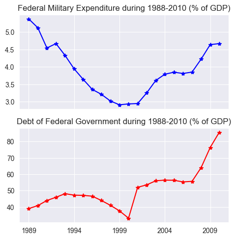
Datos de Panel#
chn = data.loc[(data['Indicator Name']=='Military expenditure (% of GDP)') & \
(data['Country Code']=='CHN'), :] #China
chn.head()
| Country Name | Country Code | Indicator Name | Indicator Code | 1960 | 1961 | 1962 | 1963 | 1964 | 1965 | ... | 2008 | 2009 | 2010 | 2011 | 2012 | 2013 | 2014 | 2015 | 2016 | Unnamed: 61 | |
|---|---|---|---|---|---|---|---|---|---|---|---|---|---|---|---|---|---|---|---|---|---|
| 134507 | China | CHN | Military expenditure (% of GDP) | MS.MIL.XPND.GD.ZS | NaN | NaN | NaN | NaN | NaN | NaN | ... | 1.878156 | 2.067426 | 1.896713 | 1.821927 | 1.838564 | 1.872334 | 1.915341 | 1.934922 | 1.922962 | NaN |
1 rows × 62 columns
chn = data.loc[(data['Indicator Name']=='Military expenditure (% of GDP)') & \
(data['Country Code']=='CHN'), :].drop(data.columns[range(3)], axis=1)
chn.head()
| Indicator Code | 1960 | 1961 | 1962 | 1963 | 1964 | 1965 | 1966 | 1967 | 1968 | ... | 2008 | 2009 | 2010 | 2011 | 2012 | 2013 | 2014 | 2015 | 2016 | Unnamed: 61 | |
|---|---|---|---|---|---|---|---|---|---|---|---|---|---|---|---|---|---|---|---|---|---|
| 134507 | MS.MIL.XPND.GD.ZS | NaN | NaN | NaN | NaN | NaN | NaN | NaN | NaN | NaN | ... | 1.878156 | 2.067426 | 1.896713 | 1.821927 | 1.838564 | 1.872334 | 1.915341 | 1.934922 | 1.922962 | NaN |
1 rows × 59 columns
chn = pd.Series(data=chn.values[0], index=chn.columns)
chn.dropna(inplace=True)
chn.head()
Indicator Code MS.MIL.XPND.GD.ZS
1989 2.499185
1990 2.555996
1991 2.407892
1992 2.518629
dtype: object
usa = data.loc[(data['Indicator Name']=='Military expenditure (% of GDP)') & \
(data['Country Code']=='USA'), :].drop(data.columns[range(3)], axis=1) #USA
usa = pd.Series(data=usa.values[0], index=usa.columns)
usa.dropna(inplace=True)
usa.head()
Indicator Code MS.MIL.XPND.GD.ZS
1960 8.35266
1961 8.487129
1962 8.656586
1963 8.189007
dtype: object
ind = data.loc[(data['Indicator Name']=='Military expenditure (% of GDP)') & \
(data['Country Code']=='IND'), :].drop(data.columns[range(3)], axis=1) #India
ind = pd.Series(data=ind.values[0], index=ind.columns)
ind.dropna(inplace=True)
ind.head()
Indicator Code MS.MIL.XPND.GD.ZS
1960 1.866015
1961 1.933365
1962 2.561202
1963 3.758057
dtype: object
gbr = data.loc[(data['Indicator Name']=='Military expenditure (% of GDP)') & \
(data['Country Code']=='GBR'), :].drop(data.columns[range(3)], axis=1) #United Kingdom
gbr = pd.Series(data=gbr.values[0], index=gbr.columns)
gbr.dropna(inplace=True)
gbr.head()
Indicator Code MS.MIL.XPND.GD.ZS
1960 6.343041
1961 6.190022
1962 6.210394
1963 6.082126
dtype: object
n_years = chn.shape[0]
print("#Years: ", n_years+1)
#Years: 30
plt.figure(figsize=(5.5, 5.5))
usa[n_years+1:2*n_years].plot(linestyle='-', marker='*', color='b')
chn[1:n_years].plot(linestyle='-', marker='*', color='r')
gbr[n_years+1:2*n_years].plot(linestyle='-', marker='*', color='g')
ind[n_years+1:2*n_years].plot(linestyle='-', marker='*', color='y')
plt.legend(['USA','CHINA','UK','INDIA'], loc=1)
plt.title('Miltitary expenditure of 4 countries over 30 years')
plt.ylabel('Military expenditure (% of GDP)')
plt.xlabel('Years');
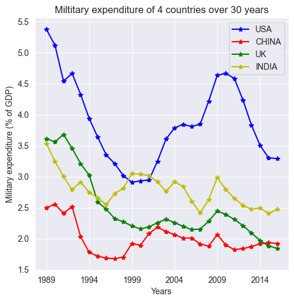
Tendencias#
import pandas as pd
import numpy as np
from matplotlib import pyplot as plt
import seaborn as sns
data = pd.read_excel('../datasets/Monthly_CO2_Concentrations.xlsx', converters={'Year': np.int32, 'Month': np.int32})
data.head()
| CO2 | Year | Month | |
|---|---|---|---|
| 0 | 333.13 | 1974 | 5 |
| 1 | 332.09 | 1974 | 6 |
| 2 | 331.10 | 1974 | 7 |
| 3 | 329.14 | 1974 | 8 |
| 4 | 327.36 | 1974 | 9 |
data.index = data['Year'].astype(str) + '-' + data['Month'].astype(str).map(lambda x: '0'+x if len(x) == 1 else x)
data.head()
| CO2 | Year | Month | |
|---|---|---|---|
| 1974-05 | 333.13 | 1974 | 5 |
| 1974-06 | 332.09 | 1974 | 6 |
| 1974-07 | 331.10 | 1974 | 7 |
| 1974-08 | 329.14 | 1974 | 8 |
| 1974-09 | 327.36 | 1974 | 9 |
data = data.loc[(~pd.isnull(data['CO2'])) & \
(~pd.isnull(data['Year']))& \
(~pd.isnull(data['Month']))]
data.sort_values(['Year', 'Month'], inplace=True)
plt.figure(figsize=(5.5, 5.5))
data['CO2'].plot(color='b')
plt.title('Monthly CO2 concentrations')
plt.xlabel('Time')
plt.ylabel('CO2 concentratition')
plt.xticks(rotation=30);
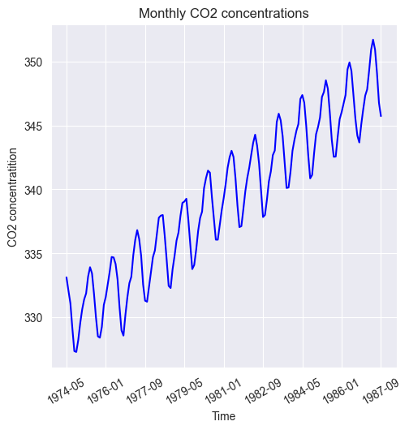
data.index = pd.to_datetime(data.index, format='%Y-%m')
frecuencia = pd.infer_freq(data.index)
print("Frecuencia: ", frecuencia)
Frecuencia: MS
plt.figure(figsize=(5.5, 5.5))
data['CO2'].loc[(data['Year']==1980) | (data['Year']==1981)].plot(color='b')
plt.title('Monthly CO2 concentrations')
plt.xlabel('Time')
plt.ylabel('CO2 concentratition')
plt.xticks(rotation=30);
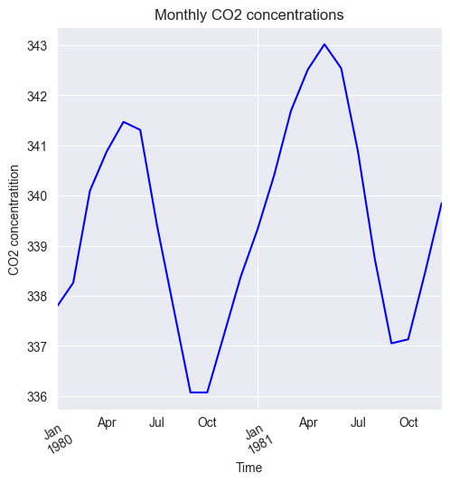
from sklearn.linear_model import LinearRegression
import numpy as np
trend_model = LinearRegression(fit_intercept=True)
trend_model.fit(np.arange(data.shape[0]).reshape((-1,1)), data['CO2'])
LinearRegression()In a Jupyter environment, please rerun this cell to show the HTML representation or trust the notebook.
On GitHub, the HTML representation is unable to render, please try loading this page with nbviewer.org.
LinearRegression()
print('Trend model coefficient={} and intercept={}'.format(trend_model.coef_[0], trend_model.intercept_))
Trend model coefficient=0.1209930124223602 and intercept=329.45310559006214
residuals = np.array(data['CO2']) - trend_model.predict(np.arange(data.shape[0]).reshape((-1,1)))
plt.figure(figsize=(5.5, 5.5))
pd.Series(data=residuals, index=data.index).plot(color='b')
plt.title('Residuals of trend model for CO2 concentrations')
plt.xlabel('Time')
plt.ylabel('CO2 concentratition')
plt.xticks(rotation=30);
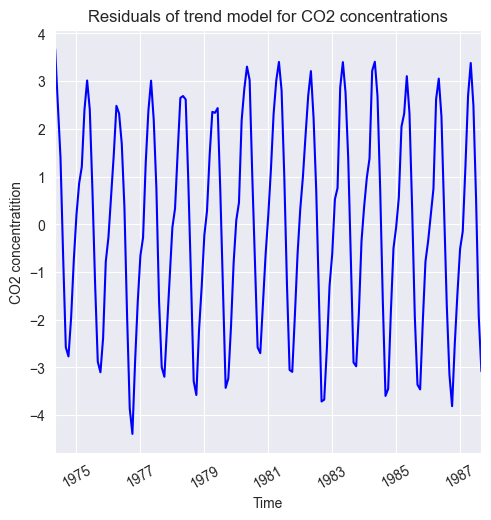
data.head()
| CO2 | Year | Month | |
|---|---|---|---|
| 1974-05-01 | 333.13 | 1974 | 5 |
| 1974-06-01 | 332.09 | 1974 | 6 |
| 1974-07-01 | 331.10 | 1974 | 7 |
| 1974-08-01 | 329.14 | 1974 | 8 |
| 1974-09-01 | 327.36 | 1974 | 9 |
data['Residuals'] = residuals
month_quarter_map = {1: 'Q1', 2: 'Q1', 3: 'Q1',
4: 'Q2', 5: 'Q2', 6: 'Q2',
7: 'Q3', 8: 'Q3', 9: 'Q3',
10: 'Q4', 11: 'Q4', 12: 'Q4'}
data['Quarter'] = data['Month'].map(lambda m: month_quarter_map.get(m))
seasonal_sub_series_data = data.groupby(by=['Year', 'Quarter'])['Residuals'].aggregate([np.mean, np.std])
seasonal_sub_series_data.columns = ['Quarterly Mean', 'Quarterly Standard Deviation']
/var/folders/_g/cvyjp6gs3f3dmxh_xzsntrkw0000gn/T/ipykernel_15203/2518710641.py:1: FutureWarning: The provided callable <function mean at 0x106b35dc0> is currently using SeriesGroupBy.mean. In a future version of pandas, the provided callable will be used directly. To keep current behavior pass the string "mean" instead.
seasonal_sub_series_data = data.groupby(by=['Year', 'Quarter'])['Residuals'].aggregate([np.mean, np.std])
/var/folders/_g/cvyjp6gs3f3dmxh_xzsntrkw0000gn/T/ipykernel_15203/2518710641.py:1: FutureWarning: The provided callable <function std at 0x106b35ee0> is currently using SeriesGroupBy.std. In a future version of pandas, the provided callable will be used directly. To keep current behavior pass the string "std" instead.
seasonal_sub_series_data = data.groupby(by=['Year', 'Quarter'])['Residuals'].aggregate([np.mean, np.std])
seasonal_sub_series_data.reset_index(inplace=True)
seasonal_sub_series_data.index = seasonal_sub_series_data['Year'].astype(str) + '-' + seasonal_sub_series_data['Quarter']
seasonal_sub_series_data.head()
| Year | Quarter | Quarterly Mean | Quarterly Standard Deviation | |
|---|---|---|---|---|
| 1974-Q2 | 1974 | Q2 | 3.096398 | 0.820946 |
| 1974-Q3 | 1974 | Q3 | -0.616085 | 1.991671 |
| 1974-Q4 | 1974 | Q4 | -1.822397 | 1.014952 |
| 1975-Q1 | 1975 | Q1 | 0.754624 | 0.511890 |
| 1975-Q2 | 1975 | Q2 | 2.604978 | 0.355093 |
plt.figure(figsize=(5.5, 5.5))
seasonal_sub_series_data['Quarterly Mean'].plot(color='b')
plt.title('Quarterly Mean of Residuals')
plt.xlabel('Time')
plt.ylabel('CO2 concentratition')
plt.xticks(rotation=30);
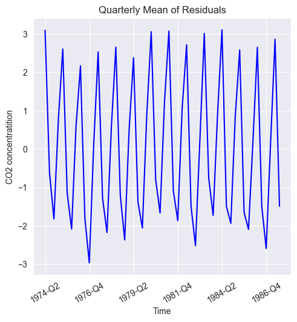
plt.figure(figsize=(5.5, 5.5))
seasonal_sub_series_data['Quarterly Standard Deviation'].plot(color='b')
plt.title('Quarterly Quarterly Standard Deviation of Residuals')
plt.xlabel('Time')
plt.ylabel('CO2 concentratition')
plt.xticks(rotation=30);
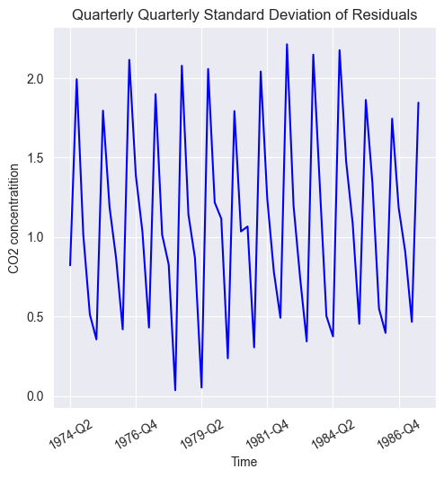
plt.figure(figsize=(5.5, 5.5))
g = sns.boxplot(data=data[data['Year'] > 1974], y='Residuals', x='Quarter')
g.set_title('Quarterly Boxplots of Residuals')
g.set_xlabel('Time')
g.set_ylabel('CO2 concentratition');
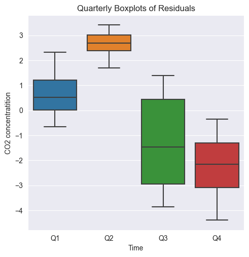
inflation = pd.read_excel('../Datasets/inflation-consumer-prices-annual.xlsx', parse_dates=['Year'])
/Users/sergiosilveramurcia/Conda/miniconda3/envs/TimesSeries/lib/python3.9/site-packages/openpyxl/worksheet/header_footer.py:48: UserWarning: Cannot parse header or footer so it will be ignored
warn("""Cannot parse header or footer so it will be ignored""")
inflation.head()
| Year | India | United States | |
|---|---|---|---|
| 0 | 1960-01-01 | 1.783265 | 1.509929 |
| 1 | 1961-01-01 | 1.752022 | 1.075182 |
| 2 | 1962-01-01 | 3.576159 | 1.116071 |
| 3 | 1963-01-01 | 2.941176 | 1.214128 |
| 4 | 1964-01-01 | 13.354037 | 1.308615 |
plt.figure(figsize=(5.5, 5.5))
plt.plot(range(1960,2017), inflation['India'], linestyle='-', marker='*', color='r')
plt.plot(range(1960,2017), inflation['United States'], linestyle='-', marker='.', color='b')
plt.legend(['India','United States'], loc=2)
plt.title('Inflation in Consumer Price Index')
plt.ylabel('Inflation')
plt.xlabel('Years');
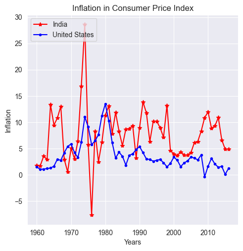
import numpy as np
from matplotlib import pyplot as plt
import seaborn as sns
np.random.seed(42)
zero_mean_series = np.random.normal(loc=0.0, scale=1., size=100)
plt.figure(figsize=(5.5, 5.5))
g = sns.lineplot(zero_mean_series)
g.set_title('Zero mean model')
g.set_xlabel('Time index');
/Users/sergiosilveramurcia/Conda/miniconda3/envs/TimesSeries/lib/python3.9/site-packages/seaborn/_oldcore.py:1119: FutureWarning: use_inf_as_na option is deprecated and will be removed in a future version. Convert inf values to NaN before operating instead.
with pd.option_context('mode.use_inf_as_na', True):
/Users/sergiosilveramurcia/Conda/miniconda3/envs/TimesSeries/lib/python3.9/site-packages/seaborn/_oldcore.py:1119: FutureWarning: use_inf_as_na option is deprecated and will be removed in a future version. Convert inf values to NaN before operating instead.
with pd.option_context('mode.use_inf_as_na', True):
random_walk = np.cumsum(zero_mean_series)
plt.figure(figsize=(5.5, 5.5))
g = sns.lineplot(random_walk)
g.set_title('Random Walk')
g.set_xlabel('Time index');
/Users/sergiosilveramurcia/Conda/miniconda3/envs/TimesSeries/lib/python3.9/site-packages/seaborn/_oldcore.py:1119: FutureWarning: use_inf_as_na option is deprecated and will be removed in a future version. Convert inf values to NaN before operating instead.
with pd.option_context('mode.use_inf_as_na', True):
/Users/sergiosilveramurcia/Conda/miniconda3/envs/TimesSeries/lib/python3.9/site-packages/seaborn/_oldcore.py:1119: FutureWarning: use_inf_as_na option is deprecated and will be removed in a future version. Convert inf values to NaN before operating instead.
with pd.option_context('mode.use_inf_as_na', True):
ACF#
import pandas as pd
from matplotlib import pyplot as plt
from statsmodels.graphics.tsaplots import plot_acf, plot_pacf
djia_df = pd.read_excel('../Datasets/DJIA_Jan2016_Dec2016.xlsx')
djia_df.index = djia_df['Date']
djia_df.head()
| Date | Open | High | Low | Close | Adj Close | Volume | |
|---|---|---|---|---|---|---|---|
| Date | |||||||
| 2016-01-04 | 2016-01-04 | 17405.480469 | 17405.480469 | 16957.630859 | 17148.939453 | 17148.939453 | 148060000 |
| 2016-01-05 | 2016-01-05 | 17147.500000 | 17195.839844 | 17038.609375 | 17158.660156 | 17158.660156 | 105750000 |
| 2016-01-06 | 2016-01-06 | 17154.830078 | 17154.830078 | 16817.619141 | 16906.509766 | 16906.509766 | 120250000 |
| 2016-01-07 | 2016-01-07 | 16888.359375 | 16888.359375 | 16463.630859 | 16514.099609 | 16514.099609 | 176240000 |
| 2016-01-08 | 2016-01-08 | 16519.169922 | 16651.890625 | 16314.570313 | 16346.450195 | 16346.450195 | 141850000 |
plt.figure(figsize=(5.5, 5.5))
djia_df['Close'].plot(color='b')
plt.title('Dow Jones Industrial Average between Jan 2016 - Dec 2016')
plt.xlabel('Time')
plt.ylabel('Closing Value');
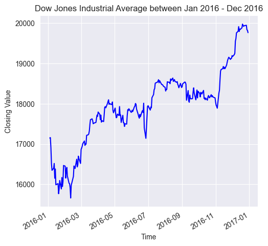
lag = range(0,31)
djia_acf = []
for l in lag:
djia_acf.append(djia_df['Close'].autocorr(l))
plt.figure(figsize=(5.5, 5.5))
plt.plot(djia_acf, marker='.', color='b')
plt.title('Autocorrelation function for DJIA')
plt.xlabel('Lag in terms of number of trading days')
plt.ylabel('Autocorrelation function');
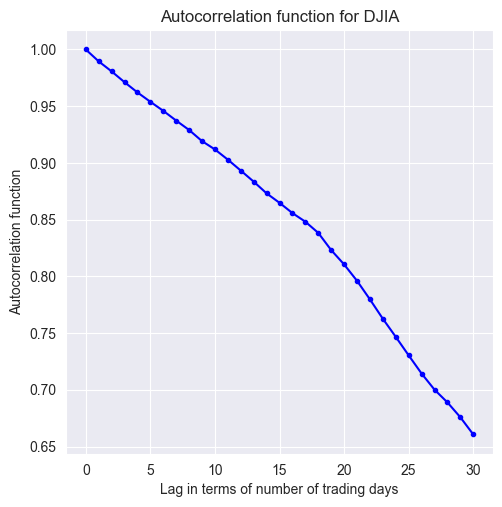
plt.figure(figsize=(5.5, 5.5));
plot_acf(djia_df['Close'], lags=31);
<Figure size 550x550 with 0 Axes>
plt.figure(figsize=(5.5, 5.5));
plot_pacf(djia_df['Close'], lags=31);
<Figure size 550x550 with 0 Axes>
import pandas as pd
import numpy as np
from matplotlib import pyplot as plt
df = pd.read_csv('../Datasets/chemical-concentration-readings.csv')
print('Shape of the dataset:', df.shape)
df.head()
Shape of the dataset: (197, 2)
| Timestamp | Chemical conc. | |
|---|---|---|
| 0 | 1975-01-01 00:00:00 | 17.0 |
| 1 | 1975-01-01 02:00:00 | 16.6 |
| 2 | 1975-01-01 04:00:00 | 16.3 |
| 3 | 1975-01-01 06:00:00 | 16.1 |
| 4 | 1975-01-01 08:00:00 | 17.1 |
datetime_rowid = df['Timestamp'].map(lambda t: pd.to_datetime(t, format='%Y-%m-%d %H:%M:%S'))
df.index = datetime_rowid
df.head()
| Timestamp | Chemical conc. | |
|---|---|---|
| Timestamp | ||
| 1975-01-01 00:00:00 | 1975-01-01 00:00:00 | 17.0 |
| 1975-01-01 02:00:00 | 1975-01-01 02:00:00 | 16.6 |
| 1975-01-01 04:00:00 | 1975-01-01 04:00:00 | 16.3 |
| 1975-01-01 06:00:00 | 1975-01-01 06:00:00 | 16.1 |
| 1975-01-01 08:00:00 | 1975-01-01 08:00:00 | 17.1 |
daily = df['Chemical conc.'].resample('D')
daily_mean = daily.mean()
fig = plt.figure(figsize=(5.5, 5.5))
ax = fig.add_subplot(1,1,1)
df['Chemical conc.'].plot(ax=ax, color='b')
daily_mean.plot(ax=ax, color='r')
ax.set_title('Bi-hourly reading (blue) & Daily Mean (red)');
ax.set_xlabel('Day in Jan 1975');
ax.set_ylabel('Chemical concentration');
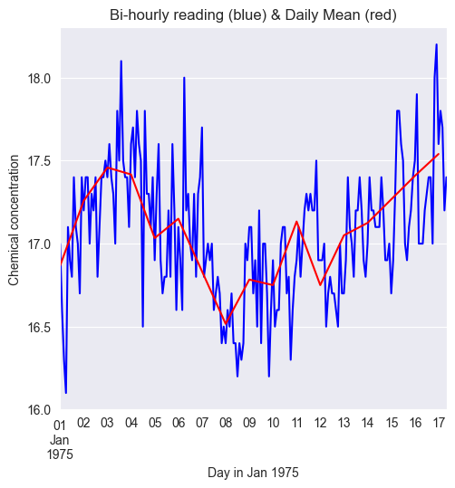
df = pd.read_csv('../Datasets/mean-daily-temperature-fisher-river.csv')
df.index = df['Date'].map(lambda d: pd.to_datetime(d, format = '%Y-%m-%d'))
print('Shape of dataframe:', df.shape)
df.head()
Shape of dataframe: (1461, 2)
| Date | Mean temperature | |
|---|---|---|
| Date | ||
| 1988-01-01 | 1988-01-01 | -23.0 |
| 1988-01-02 | 1988-01-02 | -20.5 |
| 1988-01-03 | 1988-01-03 | -22.0 |
| 1988-01-04 | 1988-01-04 | -30.5 |
| 1988-01-05 | 1988-01-05 | -31.0 |
fig = plt.figure(figsize=(5.5, 5.5))
ax = fig.add_subplot(1,1,1)
df['Mean temperature'].plot(ax=ax, color='b')
ax.set_title('Mean daily temperature');
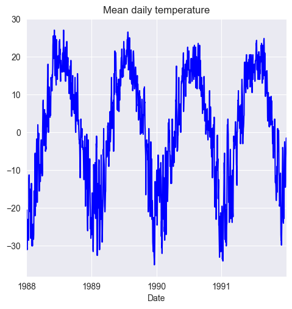
df['Month_Year'] = df.index.map(lambda d: d.strftime('%m-%Y'))
df.head()
| Date | Mean temperature | Month_Year | |
|---|---|---|---|
| Date | |||
| 1988-01-01 | 1988-01-01 | -23.0 | 01-1988 |
| 1988-01-02 | 1988-01-02 | -20.5 | 01-1988 |
| 1988-01-03 | 1988-01-03 | -22.0 | 01-1988 |
| 1988-01-04 | 1988-01-04 | -30.5 | 01-1988 |
| 1988-01-05 | 1988-01-05 | -31.0 | 01-1988 |
monthly_stats = df.groupby(by='Month_Year')['Mean temperature'].aggregate([np.mean, np.median, np.std])
monthly_stats.reset_index(inplace=True)
monthly_stats.head()
/var/folders/_g/cvyjp6gs3f3dmxh_xzsntrkw0000gn/T/ipykernel_15203/3315943458.py:1: FutureWarning: The provided callable <function mean at 0x106b35dc0> is currently using SeriesGroupBy.mean. In a future version of pandas, the provided callable will be used directly. To keep current behavior pass the string "mean" instead.
monthly_stats = df.groupby(by='Month_Year')['Mean temperature'].aggregate([np.mean, np.median, np.std])
/var/folders/_g/cvyjp6gs3f3dmxh_xzsntrkw0000gn/T/ipykernel_15203/3315943458.py:1: FutureWarning: The provided callable <function median at 0x106cc8700> is currently using SeriesGroupBy.median. In a future version of pandas, the provided callable will be used directly. To keep current behavior pass the string "median" instead.
monthly_stats = df.groupby(by='Month_Year')['Mean temperature'].aggregate([np.mean, np.median, np.std])
/var/folders/_g/cvyjp6gs3f3dmxh_xzsntrkw0000gn/T/ipykernel_15203/3315943458.py:1: FutureWarning: The provided callable <function std at 0x106b35ee0> is currently using SeriesGroupBy.std. In a future version of pandas, the provided callable will be used directly. To keep current behavior pass the string "std" instead.
monthly_stats = df.groupby(by='Month_Year')['Mean temperature'].aggregate([np.mean, np.median, np.std])
| Month_Year | mean | median | std | |
|---|---|---|---|---|
| 0 | 01-1988 | -22.137097 | -23.0 | 5.260640 |
| 1 | 01-1989 | -17.129032 | -18.0 | 8.250725 |
| 2 | 01-1990 | -15.112903 | -12.0 | 6.606764 |
| 3 | 01-1991 | -23.038710 | -24.5 | 7.095570 |
| 4 | 02-1988 | -19.025862 | -19.5 | 8.598522 |
monthly_stats['Year'] = monthly_stats['Month_Year']\
.map(lambda m: pd.to_datetime(m, format='%m-%Y').strftime('%Y'))
monthly_stats['Month'] = monthly_stats['Month_Year']\
.map(lambda m: pd.to_datetime(m, format='%m-%Y').strftime('%m'))
monthly_stats.sort_values(by=['Year', 'Month'], inplace=True)
monthly_stats.head()
| Month_Year | mean | median | std | Year | Month | |
|---|---|---|---|---|---|---|
| 0 | 01-1988 | -22.137097 | -23.000 | 5.260640 | 1988 | 01 |
| 4 | 02-1988 | -19.025862 | -19.500 | 8.598522 | 1988 | 02 |
| 8 | 03-1988 | -8.258065 | -9.250 | 5.341459 | 1988 | 03 |
| 12 | 04-1988 | 2.641667 | 1.875 | 5.057720 | 1988 | 04 |
| 16 | 05-1988 | 11.290323 | 11.000 | 6.254364 | 1988 | 05 |
monthly_stats.index = monthly_stats['Month_Year']
fig = plt.figure(figsize=(5.5, 5.5))
ax = fig.add_subplot(1,1,1)
monthly_stats['mean'].plot(ax=ax, color='b')
monthly_stats['std'].plot(ax=ax, color='r')
ax.set_title('Monthly statistics: Mean (blue) & Std. Dev. (red)');
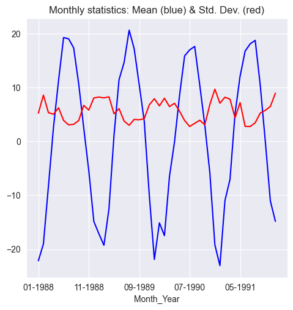
weekly_moving_average = df['Mean temperature'].rolling(7).mean()
monthly_moving_average = df['Mean temperature'].rolling(30).mean()
weekly_moving_average_2stride = df['Mean temperature'].rolling(7).mean()[::2]
monthly_moving_average_2stride = df['Mean temperature'].rolling(30).mean()[::2]
fig, axarr = plt.subplots(3, sharex=True)
fig.set_size_inches(5.5, 5,5)
df['Mean temperature'].plot(ax=axarr[0], color='b')
axarr[0].set_title('Daily mean temperature');
weekly_moving_average.plot(ax=axarr[1], color='r')
axarr[1].set_title('Weekly moving average');
monthly_moving_average.plot(ax=axarr[2], color='g')
axarr[2].set_title('Monthly moving average');
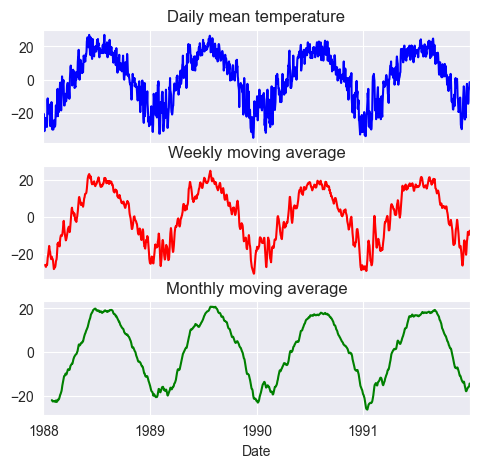
from random import seed
from pandas import Series
import random
from pandas.plotting import autocorrelation_plot
import matplotlib.pyplot as plt
seed(1)
series = [random.gauss(0.0, 1.0) for i in range(1000)]
series = Series(series)
series.describe()
count 1000.000000
mean -0.013222
std 1.003685
min -2.961214
25% -0.684192
50% -0.010934
75% 0.703915
max 2.737260
dtype: float64
series.plot(alpha=0.7);
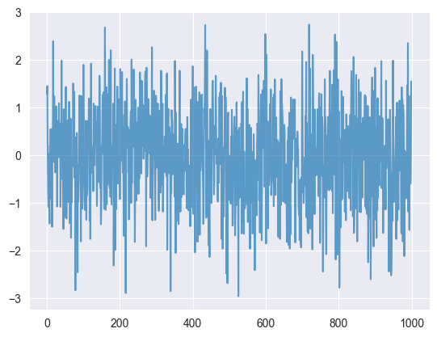
import pandas as pd
import numpy as np
from statsmodels.tsa import stattools
from matplotlib import pyplot as plt
from pandas.plotting import autocorrelation_plot
djia_df = pd.read_excel('../Datasets/DJIA_Jan2016_Dec2016.xlsx')
djia_df.head()
| Date | Open | High | Low | Close | Adj Close | Volume | |
|---|---|---|---|---|---|---|---|
| 0 | 2016-01-04 | 17405.480469 | 17405.480469 | 16957.630859 | 17148.939453 | 17148.939453 | 148060000 |
| 1 | 2016-01-05 | 17147.500000 | 17195.839844 | 17038.609375 | 17158.660156 | 17158.660156 | 105750000 |
| 2 | 2016-01-06 | 17154.830078 | 17154.830078 | 16817.619141 | 16906.509766 | 16906.509766 | 120250000 |
| 3 | 2016-01-07 | 16888.359375 | 16888.359375 | 16463.630859 | 16514.099609 | 16514.099609 | 176240000 |
| 4 | 2016-01-08 | 16519.169922 | 16651.890625 | 16314.570313 | 16346.450195 | 16346.450195 | 141850000 |
djia_df['Date'] = pd.to_datetime(djia_df['Date'], '%Y-%m-%d')
djia_df.index = djia_df['Date']
djia_df.drop('Date', axis=1, inplace=True)
djia_df.head()
| Open | High | Low | Close | Adj Close | Volume | |
|---|---|---|---|---|---|---|
| Date | ||||||
| 2016-01-04 | 17405.480469 | 17405.480469 | 16957.630859 | 17148.939453 | 17148.939453 | 148060000 |
| 2016-01-05 | 17147.500000 | 17195.839844 | 17038.609375 | 17158.660156 | 17158.660156 | 105750000 |
| 2016-01-06 | 17154.830078 | 17154.830078 | 16817.619141 | 16906.509766 | 16906.509766 | 120250000 |
| 2016-01-07 | 16888.359375 | 16888.359375 | 16463.630859 | 16514.099609 | 16514.099609 | 176240000 |
| 2016-01-08 | 16519.169922 | 16651.890625 | 16314.570313 | 16346.450195 | 16346.450195 | 141850000 |
first_order_diff = djia_df['Close'].diff(1)
fig, ax = plt.subplots(2, sharex=True)
fig.set_size_inches(5.5, 5.5)
djia_df['Close'].plot(ax=ax[0], color='b');
ax[0].set_title('Close values of DJIA during Jan 2016-Dec 2016');
first_order_diff.plot(ax=ax[1], color='r');
ax[1].set_title('First-order differences of DJIA during Jan 2016-Dec 2016');
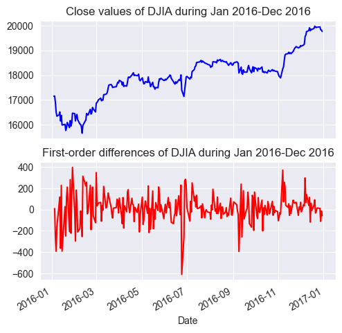
fig, ax = plt.subplots(2, sharex=True)
fig.set_size_inches(5.5, 5.5)
autocorrelation_plot(djia_df['Close'], color='b', ax=ax[0])
ax[0].set_title('ACF of DJIA Close values')
autocorrelation_plot(first_order_diff.iloc[1:], color='r', ax=ax[1])
ax[1].set_title('ACF of first differences of DJIA Close values')
plt.tight_layout(pad=0.4, w_pad=0.5, h_pad=2.0)
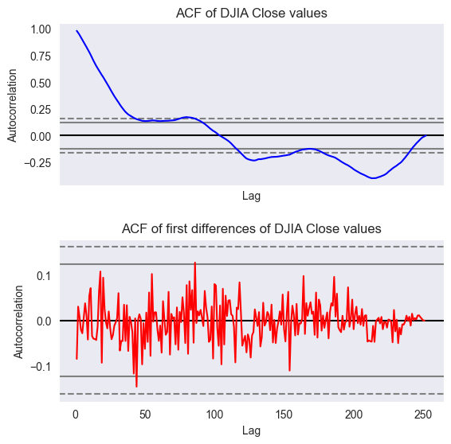
acf_djia, confint_djia, qstat_djia, pvalues_djia = stattools.acf(djia_df['Close'],
nlags=20,
qstat=True,
alpha=0.05)
alpha = 0.05
for l, p_val in enumerate(pvalues_djia):
if p_val > alpha:
print('Null hypothesis is accepted at lag = {} for p-val = {}'.format(l, p_val))
else:
print('Null hypothesis is rejected at lag = {} for p-val = {}'.format(l, p_val))
Null hypothesis is rejected at lag = 0 for p-val = 2.857506276385174e-55
Null hypothesis is rejected at lag = 1 for p-val = 1.7871763971271254e-105
Null hypothesis is rejected at lag = 2 for p-val = 9.927155881909959e-154
Null hypothesis is rejected at lag = 3 for p-val = 8.084096278834598e-200
Null hypothesis is rejected at lag = 4 for p-val = 9.125287802249553e-244
Null hypothesis is rejected at lag = 5 for p-val = 1.0907828815951678e-285
Null hypothesis is rejected at lag = 6 for p-val = 0.0
Null hypothesis is rejected at lag = 7 for p-val = 0.0
Null hypothesis is rejected at lag = 8 for p-val = 0.0
Null hypothesis is rejected at lag = 9 for p-val = 0.0
Null hypothesis is rejected at lag = 10 for p-val = 0.0
Null hypothesis is rejected at lag = 11 for p-val = 0.0
Null hypothesis is rejected at lag = 12 for p-val = 0.0
Null hypothesis is rejected at lag = 13 for p-val = 0.0
Null hypothesis is rejected at lag = 14 for p-val = 0.0
Null hypothesis is rejected at lag = 15 for p-val = 0.0
Null hypothesis is rejected at lag = 16 for p-val = 0.0
Null hypothesis is rejected at lag = 17 for p-val = 0.0
Null hypothesis is rejected at lag = 18 for p-val = 0.0
Null hypothesis is rejected at lag = 19 for p-val = 0.0
acf_first_diff, confint_first_diff,\
qstat_first_diff, pvalues_first_diff = stattools.acf(first_order_diff.iloc[1:],
nlags=20,
qstat=True,
alpha=0.05)
alpha = 0.05
for l, p_val in enumerate(pvalues_first_diff):
if p_val > alpha:
print('Null hypothesis is accepted at lag = {} for p-val = {}'.format(l, p_val))
else:
print('Null hypothesis is rejected at lag = {} for p-val = {}'.format(l, p_val))
Null hypothesis is accepted at lag = 0 for p-val = 0.17742519268365267
Null hypothesis is accepted at lag = 1 for p-val = 0.35711074717194824
Null hypothesis is accepted at lag = 2 for p-val = 0.5569664476694898
Null hypothesis is accepted at lag = 3 for p-val = 0.7025937592112144
Null hypothesis is accepted at lag = 4 for p-val = 0.7937258941281413
Null hypothesis is accepted at lag = 5 for p-val = 0.880645293990265
Null hypothesis is accepted at lag = 6 for p-val = 0.9058055508095895
Null hypothesis is accepted at lag = 7 for p-val = 0.9461503874902826
Null hypothesis is accepted at lag = 8 for p-val = 0.9529107001186853
Null hypothesis is accepted at lag = 9 for p-val = 0.9452880323047996
Null hypothesis is accepted at lag = 10 for p-val = 0.9103701842715781
Null hypothesis is accepted at lag = 11 for p-val = 0.9303312940619602
Null hypothesis is accepted at lag = 12 for p-val = 0.9412519715905938
Null hypothesis is accepted at lag = 13 for p-val = 0.9498882104867831
Null hypothesis is accepted at lag = 14 for p-val = 0.9556341186857322
Null hypothesis is accepted at lag = 15 for p-val = 0.9708115886391275
Null hypothesis is accepted at lag = 16 for p-val = 0.9617513839353877
Null hypothesis is accepted at lag = 17 for p-val = 0.8766266334022736
Null hypothesis is accepted at lag = 18 for p-val = 0.7968569568190992
Null hypothesis is accepted at lag = 19 for p-val = 0.7023038219602964
daily_temp = pd.read_excel('../Datasets/mean-daily-temperature-fisher-river.xlsx')
daily_temp.head()
| Date | Mean_Temperature | |
|---|---|---|
| 0 | 1988-01-01 | -23.0 |
| 1 | 1988-01-02 | -20.5 |
| 2 | 1988-01-03 | -22.0 |
| 3 | 1988-01-04 | -30.5 |
| 4 | 1988-01-05 | -31.0 |
daily_temp.index = daily_temp['Date'].map(lambda date: pd.to_datetime(date, '%Y-%m-%d'))
daily_temp.drop('Date', axis=1, inplace=True)
daily_temp.head()
| Mean_Temperature | |
|---|---|
| Date | |
| 1988-01-01 | -23.0 |
| 1988-01-02 | -20.5 |
| 1988-01-03 | -22.0 |
| 1988-01-04 | -30.5 |
| 1988-01-05 | -31.0 |
fig = plt.figure(figsize=(5.5, 5.5))
ax = fig.add_subplot(1,1,1)
ax.set_title('Daily temperatures of Fisher River, TX, US');
daily_temp.plot(ax=ax);
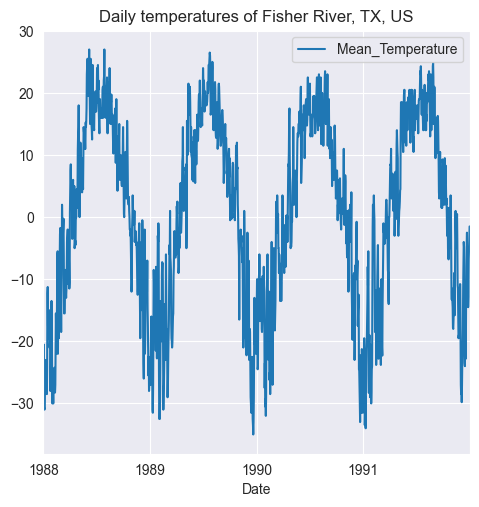
montly_resample = daily_temp['Mean_Temperature'].resample('M')
monthly_mean_temp = montly_resample.mean()
print('Shape of monthly mean temperature dataset:', monthly_mean_temp.shape)
monthly_mean_temp.head()
Shape of monthly mean temperature dataset: (48,)
/var/folders/_g/cvyjp6gs3f3dmxh_xzsntrkw0000gn/T/ipykernel_15203/465217139.py:1: FutureWarning: 'M' is deprecated and will be removed in a future version, please use 'ME' instead.
montly_resample = daily_temp['Mean_Temperature'].resample('M')
Date
1988-01-31 -22.137097
1988-02-29 -19.025862
1988-03-31 -8.258065
1988-04-30 2.641667
1988-05-31 11.290323
Freq: ME, Name: Mean_Temperature, dtype: float64
fig = plt.figure(figsize=(5.5, 5.5))
ax = fig.add_subplot(1,1,1)
ax.set_title('Monthly mean temperatures of Fisher River, TX, US')
monthly_mean_temp.plot(ax=ax);
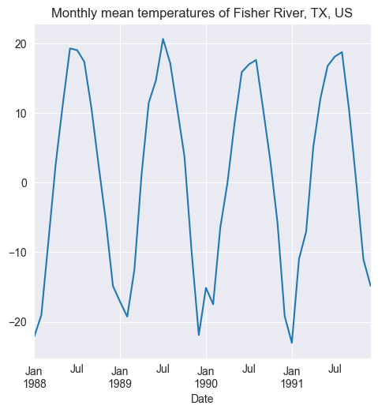
fig = plt.figure(figsize=(5.5, 5.5))
ax = fig.add_subplot(1,1,1)
ax.set_title('ACF of monthly mean temperatures of Fisher River, TX, US')
autocorrelation_plot(monthly_mean_temp, ax=ax);
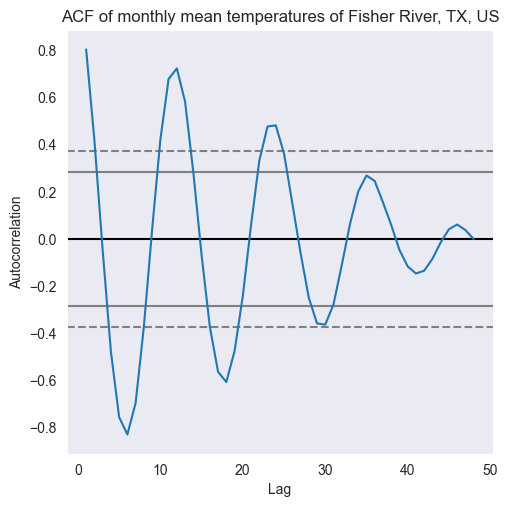
seasonal_diff = monthly_mean_temp.diff(12)
seasonal_diff = seasonal_diff[12:]
fig = plt.figure(figsize=(5.5, 5.5))
ax = fig.add_subplot(1,1,1)
ax.set_title('Seasonal differences');
seasonal_diff.plot(ax=ax);
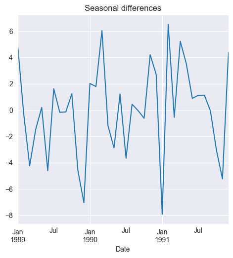
fig = plt.figure(figsize=(5.5, 5.5))
ax = fig.add_subplot(1,1,1)
ax.set_title('ACF of Seasonal differences');
autocorrelation_plot(seasonal_diff, ax=ax);
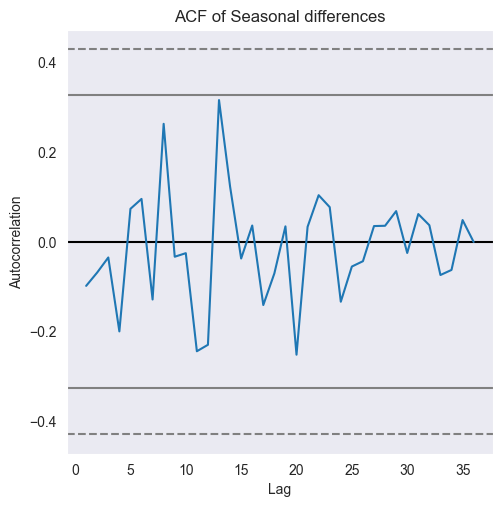
_, _, _, pval_monthly_mean = stattools.acf(monthly_mean_temp,
nlags=10,
qstat=True,
alpha=0.05)
print('Null hypothesis is rejected for lags:', np.where(pval_monthly_mean<=0.05))
Null hypothesis is rejected for lags: (array([0, 1, 2, 3, 4, 5, 6, 7, 8, 9]),)
_, _, _, pval_seasonal_diff = stattools.acf(seasonal_diff,
nlags=10,
qstat=True,
alpha=0.05)
print('Null hypothesis is rejected for lags:', np.where(pval_seasonal_diff<=0.05))
Null hypothesis is rejected for lags: (array([], dtype=int64),)
air_miles = pd.read_csv('../Datasets/us-airlines-monthly-aircraft-miles-flown.csv')
air_miles.index = air_miles.Month
print('Shape of the DataFrame:', air_miles.shape)
air_miles.head()
Shape of the DataFrame: (97, 2)
| Month | U.S. airlines: monthly aircraft miles flown (Millions) 1963 -1970 | |
|---|---|---|
| Month | ||
| 1963-01 | 1963-01 | 6827.0 |
| 1963-02 | 1963-02 | 6178.0 |
| 1963-03 | 1963-03 | 7084.0 |
| 1963-04 | 1963-04 | 8162.0 |
| 1963-05 | 1963-05 | 8462.0 |
air_miles.rename(columns={'U.S. airlines: monthly aircraft miles flown (Millions) 1963 -1970':\
'Air miles flown'}, inplace=True)
missing = pd.isnull(air_miles['Air miles flown'])
print('Number of missing values found:', missing.sum())
air_miles = air_miles.loc[~missing, :]
Number of missing values found: 1
fig = plt.figure(figsize=(5.5, 5.5))
ax = fig.add_subplot(1,1,1)
air_miles['Air miles flown'].plot(ax=ax)
ax.set_title('Monthly air miles flown during 1963 - 1970')
Text(0.5, 1.0, 'Monthly air miles flown during 1963 - 1970')
adf_result = stattools.adfuller(air_miles['Air miles flown'], autolag='AIC')
print('p-val of the ADF test in air miles flown:', adf_result[1])
p-val of the ADF test in air miles flown: 0.9945022811234029
import pandas as pd
from matplotlib import pyplot as plt
ibm_df = pd.read_csv('../Datasets/ibm-common-stock-closing-prices.csv')
ibm_df.index = ibm_df['Date']
ibm_df.rename(columns={'IBM common stock closing prices': 'Close_Price'}, inplace=True)
ibm_df.head()
| Date | Close_Price | |
|---|---|---|
| Date | ||
| 1962-01-02 | 1962-01-02 | 572.00 |
| 1962-01-03 | 1962-01-03 | 577.00 |
| 1962-01-04 | 1962-01-04 | 571.25 |
| 1962-01-05 | 1962-01-05 | 560.00 |
| 1962-01-08 | 1962-01-08 | 549.50 |
missing = (pd.isnull(ibm_df['Date'])) & (pd.isnull(ibm_df['Close_Price']))
print('No. of rows with missing values:', missing.sum())
ibm_df = ibm_df.loc[~missing, :]
No. of rows with missing values: 0
ibm_df['5-Day Moving Avg'] = ibm_df['Close_Price'].rolling(5).mean()
fig = plt.figure(figsize=(5.5, 5.5))
ax = fig.add_subplot(2,1,1)
ibm_df['Close_Price'].plot(ax=ax, color='b')
ax.set_title('IBM Common Stock Close Prices during 1962-1965')
ax = fig.add_subplot(2,1,2)
ibm_df['5-Day Moving Avg'].plot(ax=ax, color='r')
ax.set_title('5-day Moving Average')
plt.tight_layout(pad=0.4, w_pad=0.5, h_pad=2.0)
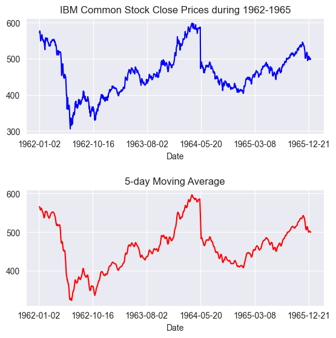
MA2 = ibm_df['Close_Price'].rolling(window=2).mean()
TwoXMA2 = MA2.rolling(window=2).mean()
MA4 = ibm_df['Close_Price'].rolling(window=4).mean()
TwoXMA4 = MA4.rolling(window=2).mean()
MA3 = ibm_df['Close_Price'].rolling(window=3).mean()
ThreeXMA3 = MA3.rolling(window=3).mean()
TwoXMA2 = MA2.dropna()
TwoXMA4 = MA4.dropna()
ThreeXMA3 = MA3.dropna()
f, axarr = plt.subplots(3, sharex=True)
f.set_size_inches(5.5, 6.5)
ibm_df['Close_Price'].iloc[:45].plot(color='b', linestyle = '-', ax=axarr[0])
MA2.iloc[:45].plot(color='r', linestyle = '--', ax=axarr[0])
TwoXMA2.iloc[:45].plot(color='g', linestyle = '--', ax=axarr[0])
axarr[0].set_title('2 day MA & 2X2 day MA');
ibm_df['Close_Price'].iloc[:45].plot(color='b', linestyle = '-', ax=axarr[1])
MA4.iloc[:45].plot(color='r', linestyle = '--', ax=axarr[1])
TwoXMA4.iloc[:45].plot(color='g', linestyle = '--', ax=axarr[1])
axarr[1].set_title('4 day MA & 2X4 day MA');
ibm_df['Close_Price'].iloc[:45].plot(color='b', linestyle = '-', ax=axarr[2])
MA3.iloc[:45].plot(color='r', linestyle = '--', ax=axarr[2])
ThreeXMA3.iloc[:45].plot(color='g', linestyle = '--', ax=axarr[2])
axarr[2].set_title('3 day MA & 3X 3day MA');
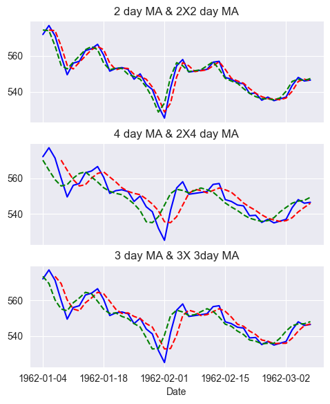